Japandi isn't really a color palette or a shopping list.
It's two design philosophies layered together, Japanese wabi-sabi, which finds beauty in imperfection and simplicity, and Scandinavian hygge, which prioritizes warmth and comfort.
A bathroom built on those principles looks calm almost by accident, because the principles themselves are calm.
These 10 ideas each trace back to one of those two roots.

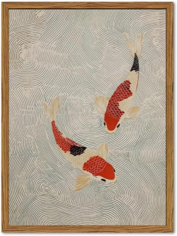
Framed Japanese Wall Art, Minimalist Red and Cream Koi Fish Canvas Print
Shop on AmazonScaling the Principles Down for a Small Bathroom
Every principle on this list scales down without losing its meaning.
A small bathroom actually suits Japandi especially well, since the restraint the style calls for is already somewhat forced by the limited space.
Prioritize natural light and one or two natural-material pieces over trying to cram in everything else from this list.
A tight space executed with real restraint reads as more genuinely Japandi than a large room trying to do too much at once.
1. Choose Fewer, Better Accessories
Every object visible in the room should earn its place, a soap dish, a single vase, one piece of functional art.
This loops right back to the core idea running through this whole style: minimal doesn't mean empty, it means deliberate.
Quality over quantity isn't just a saying here, it's the actual design rule the whole room follows.
The last, smallest decisions are often what separate a genuinely Japandi room from one that just happens to look neutral.
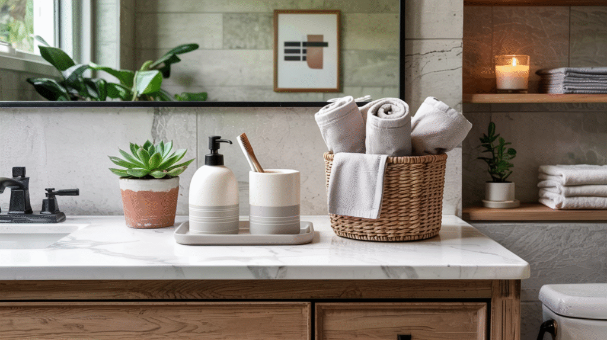
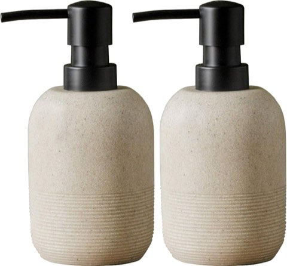
GalDal Beige Resin Hand Soap Dispenser Set, 2 Pcs, for Bathroom Countertop
Shop on Amazon2. Add Texture, Subtly
A woven mat, a linen towel, a textured tile, these add tactile interest without adding any visual noise to the room.
This is a quieter expression of wabi-sabi's appreciation for natural variation and handmade quality.
Subtlety is the operative word here, one or two textured elements, not an overwhelming mix of them.
Texture does the job color usually does in a less restrained style.
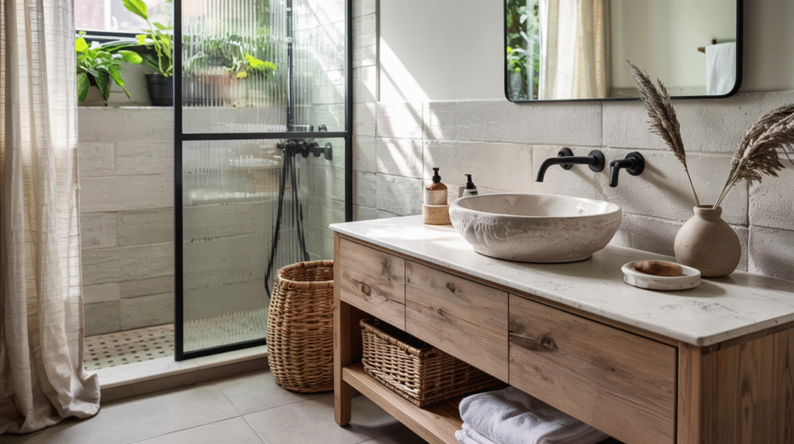
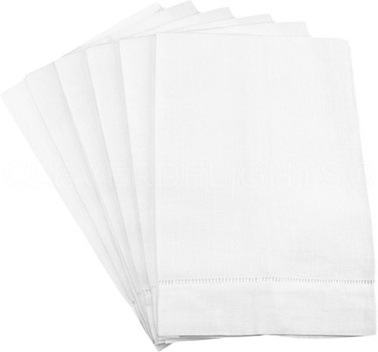
CleverDelights White Linen Hemstitched Hand Towels, 6 Pack, 14 x 22 Inch
Shop on Amazon3. Layer the Lighting
A single overhead fixture can't capture the mood both philosophies are actually going for.
Task lighting at the mirror, ambient lighting overall, and perhaps a small accent light each serve a different moment in the room's daily use.
This reflects the hygge instinct toward comfort tailored to whatever activity is actually happening in the room.
Worth the extra planning, since lighting affects mood more than almost any single object choice could.
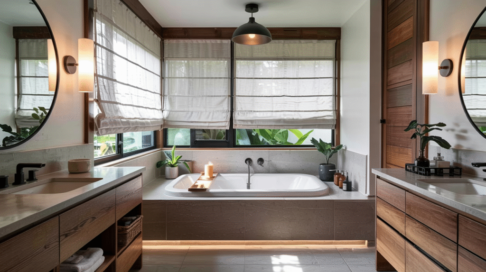
4. Bring In Plants
A single plant connects the room to something alive and imperfect by nature, no two leaves grow identically.
This ties directly back to wabi-sabi's root in natural, unforced beauty.
Humidity-tolerant varieties handle a bathroom's conditions without much extra care required.
One plant, well-placed, says more than a cluttered collection of several ever could.
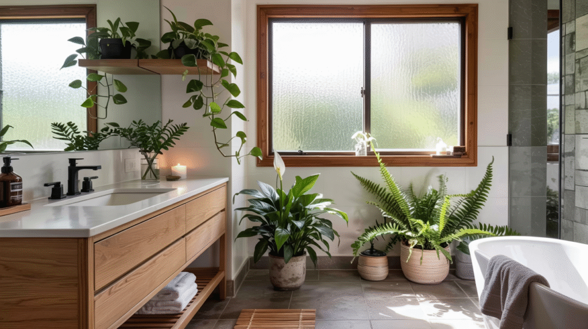
5. Add Organic, Imperfect Shapes
A rounded mirror, a hand-thrown ceramic sink, an asymmetrical vessel, these directly embody wabi-sabi's appreciation for the imperfect and the handmade.
Sharp, machine-precise edges read as the opposite of this philosophy, even sitting inside an otherwise neutral palette.
One organic shape, well-placed, does more for a room's character than several matching rectangular pieces combined.
This is where the style's actual personality shows up.
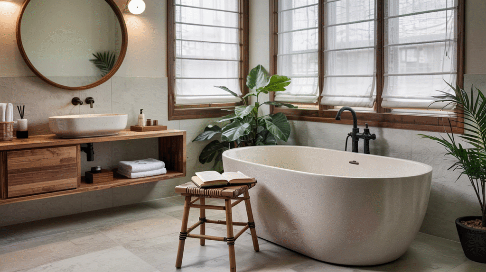
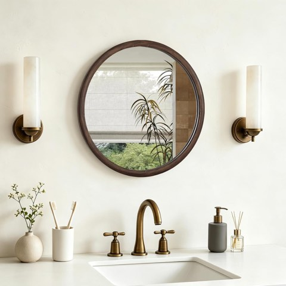
HOMECOOKIN 24 Inch Round Mirror, Farmhouse Wood Grain Framed Wall Mirror
Shop on Amazon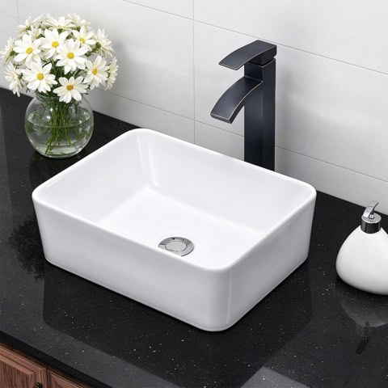
Kichae Rectangular Vessel Sink, 16 x 12 Inch, Modern White Above-Counter Porcelain
Shop on Amazon6. Choose a Soft, Neutral Palette
Muted whites, warm beiges, and soft grays let the materials and light do the visual work instead of color.
This isn't about avoiding color entirely, it's about letting texture carry more weight than hue does.
A loud palette actively works against the calm both source philosophies are built around.
Restraint here is a deliberate choice, not a lack of personality.
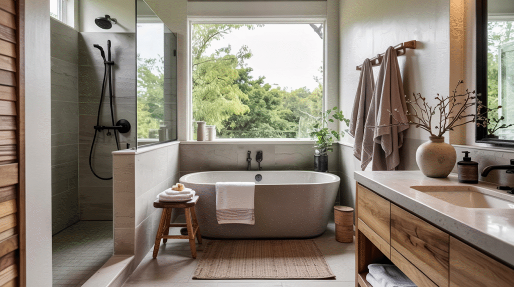
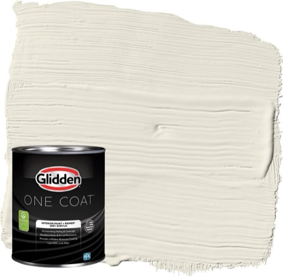
Glidden Interior Paint and Primer, Greige Oatmeal, One Coat, Eggshell, 1 Quart
Shop on Amazon7. Keep Storage Calm and Out of Sight
Visual calm requires clutter to actually disappear, not just get tidied into a corner somewhere.
Closed cabinetry, a hidden hamper, drawers instead of open shelves all serve the same underlying goal.
This is the functional minimalism half of the philosophy, not fewer possessions necessarily, just fewer visible ones.
A room can hold plenty of stuff and still read as serene, as long as none of it is actually on display.
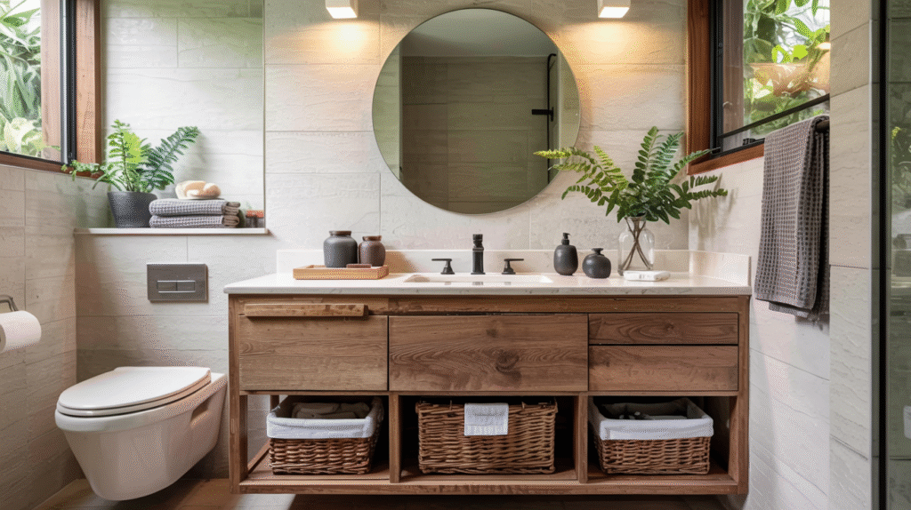
8. Commit to Natural Materials
Wood, stone, linen, and clay all carry the imperfection wabi-sabi actually celebrates, grain variation, subtle color shifts, a texture that ages visibly over time.
A synthetic material that mimics stone misses the point entirely, even if it looks nearly identical in a photo.
This is the single most defining material choice in the whole style.
Worth prioritizing over any other single decision on this list.
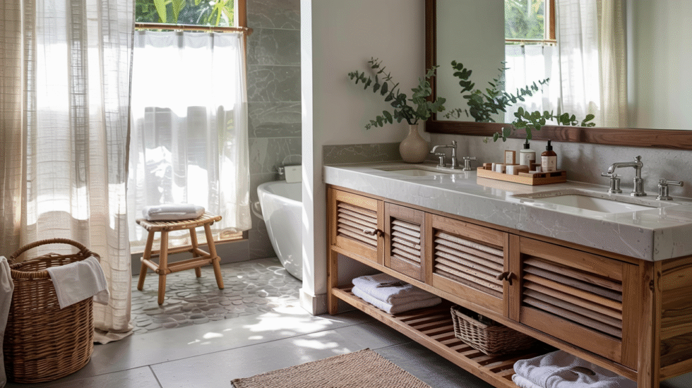
9. Let Real Light Lead
Natural light is central to both source philosophies, it reveals texture honestly, without needing any artificial enhancement.
An unobstructed window, sheer rather than heavy curtains, or a skylight all serve this principle directly.
Where natural light isn't available, warm-toned artificial light gets closest to the same effect.
Harsh, cool lighting works against the whole philosophy, regardless of what else is in the room.
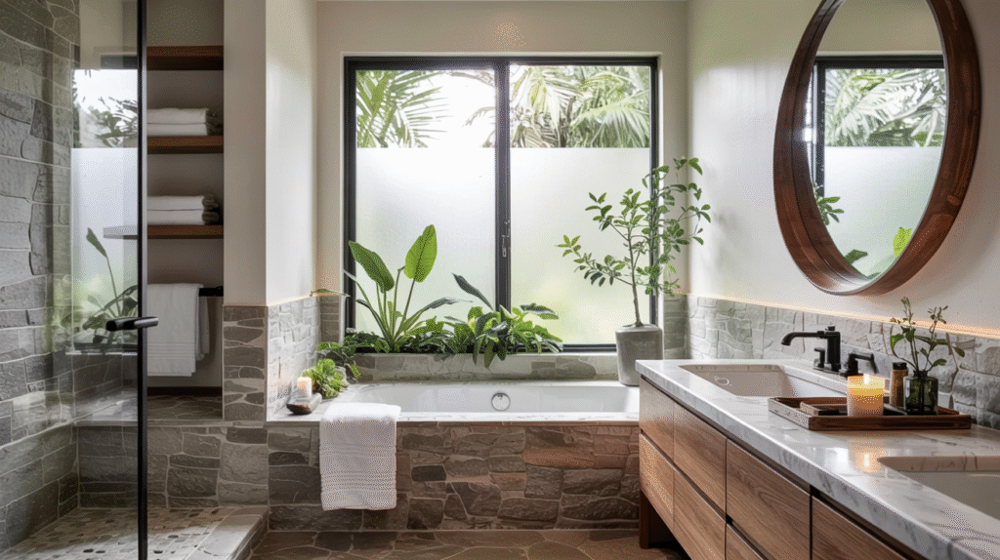

10. Minimal, But Warm
Pure minimalism can feel cold on its own. Japandi avoids that by pairing a restrained object count with genuinely warm materials.
A single wood stool, one ceramic dish, nothing else on the counter, the warmth comes from what's actually there, not from how much of it there is.
This is the hygge half of the equation balancing out the wabi-sabi instinct to strip things down to nearly nothing.
Fewer objects, chosen carefully, beats a room with nothing in it at all.
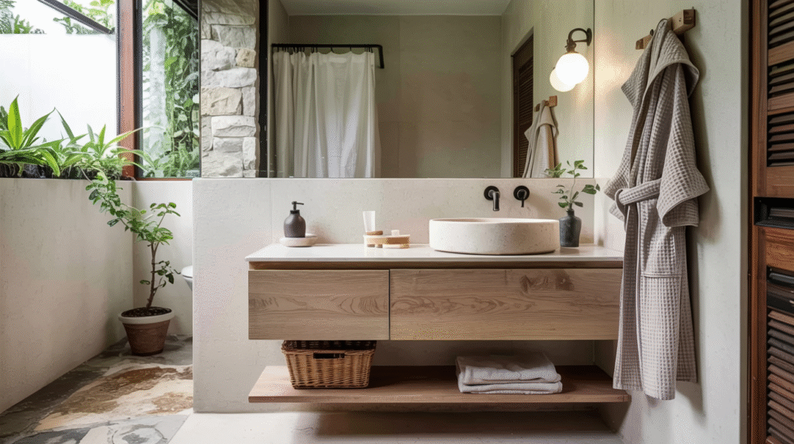
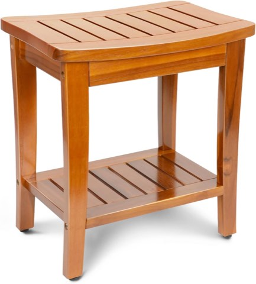
Compact Teak Shower Bench with Shelf, 16 Inch, Premium Teak Shower Stool
Shop on AmazonFinal Thoughts
Japandi works because the two philosophies behind it reinforce each other, imperfection and warmth, restraint and comfort.
Chasing the aesthetic without understanding the principles behind it usually produces a merely neutral bathroom, not a genuinely calm one.
Start with material choices and light, since those matter more than any single decorative object ever will.
The rest follows naturally once that foundation is actually right.